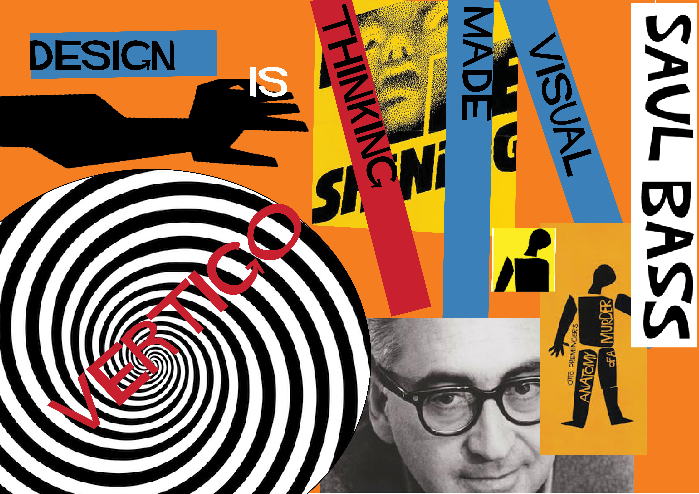

The theme for this project was to creaate a resposnive website in a certain style of design. My style was Saul Bass.
I created a logo and followed the main lines of the style in details of colors, typography and images.
I placed my main ideas in a moodboard from where I took inspiration on the other pages. I used Hitchcock font for typography as it was the font designed for Saul Bass posters.
The colors used were red, blue, orange. Powerful colours to transmit emotion and power towards the user.